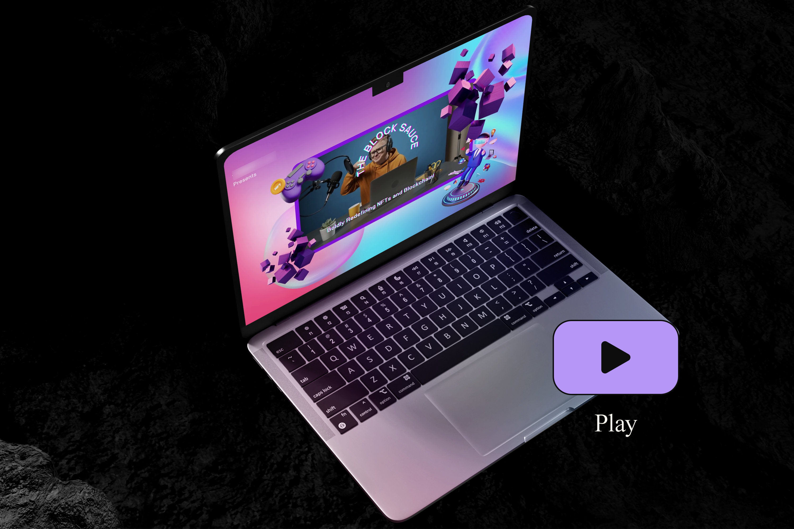

INTRO
Per promuovere un nuovo podcast nel settore Web3, è stata richiesta la creazione di banner che catturassero l’attenzione e risultassero visivamente accattivanti anche per un pubblico non esperto del settore. In assenza di linee guida visive definite, sono state proposte quattro varianti di banner, esplorando stili diversi per permettere al cliente di scegliere quello più adatto alla propria identità.
Per promuovere un nuovo podcast nel settore Web3, è stata richiesta la creazione di banner che catturassero l’attenzione e risultassero visivamente accattivanti anche per un pubblico non esperto del settore. In assenza di linee guida visive definite, sono state proposte quattro varianti di banner, esplorando stili diversi per permettere al cliente di scegliere quello più adatto alla propria identità.

LA SFIDA
La mancanza di linee guida visive ha presentato sia una sfida che un’opportunità. Senza uno stile prestabilito, era essenziale creare un design versatile che rispettasse il tono del settore, attirando sia un pubblico tech che la community dei gamer. Ogni banner è stato sviluppato con un target specifico in mente, esplorando vari stili, colori e tecniche per adattarsi a diverse sottoculture digitali.
La mancanza di linee guida visive ha presentato sia una sfida che un’opportunità. Senza uno stile prestabilito, era essenziale creare un design versatile che rispettasse il tono del settore, attirando sia un pubblico tech che la community dei gamer. Ogni banner è stato sviluppato con un target specifico in mente, esplorando vari stili, colori e tecniche per adattarsi a diverse sottoculture digitali.

LA SOLUZIONE
Ogni banner è stato progettato con uno stile visivo particolare per rispondere a target specifici e creare una narrativa visiva coerente ma varia. La prima opzione è un breve video ad di 15 secondi caratterizzato da uno stile umoristico e ispirato al mondo gaming, comunemente utilizzato nell'industria delle criptovalute. Gli elementi grafici si allineano a tendenze del settore, combinando colori brillanti, testi glitch e animazioni accattivanti per attirare l’attenzione della community di gamer e utenti di NFT. La seconda opzione è anch’essa un banner video, ma più corto e con un approccio totalmente diverso: uno stile minimalista con spunti brutalisti, sperimentando con il concetto di “less is more” per offrire un'esperienza visiva unica e coinvolgente.
Per le varianti statiche, sono state create due soluzioni: la prima è un banner di dimensioni standard per Twitter che utilizza gradienti e forme olografiche, molto comuni nel settore delle criptovalute, con un’estetica elegante e professionale che, pur richiamando la palette del video iniziale, mantiene un tono più sobrio ma con una leggera influenza “gaming”. L’ultima versione, sempre in formato statico, adotta uno stile simile al suo corrispettivo video, impiegando una combinazione di bianco e nero con accenti neon e tipografia audace. Questo stile è in rapida ascesa nell’industria del Web3 e si è dimostrato perfetto per catturare l’attenzione con un look deciso e non convenzionale.
Ogni banner è stato progettato con uno stile visivo particolare per rispondere a target specifici e creare una narrativa visiva coerente ma varia. La prima opzione è un breve video ad di 15 secondi caratterizzato da uno stile umoristico e ispirato al mondo gaming, comunemente utilizzato nell'industria delle criptovalute. Gli elementi grafici si allineano a tendenze del settore, combinando colori brillanti, testi glitch e animazioni accattivanti per attirare l’attenzione della community di gamer e utenti di NFT. La seconda opzione è anch’essa un banner video, ma più corto e con un approccio totalmente diverso: uno stile minimalista con spunti brutalisti, sperimentando con il concetto di “less is more” per offrire un'esperienza visiva unica e coinvolgente.
Per le varianti statiche, sono state create due soluzioni: la prima è un banner di dimensioni standard per Twitter che utilizza gradienti e forme olografiche, molto comuni nel settore delle criptovalute, con un’estetica elegante e professionale che, pur richiamando la palette del video iniziale, mantiene un tono più sobrio ma con una leggera influenza “gaming”. L’ultima versione, sempre in formato statico, adotta uno stile simile al suo corrispettivo video, impiegando una combinazione di bianco e nero con accenti neon e tipografia audace. Questo stile è in rapida ascesa nell’industria del Web3 e si è dimostrato perfetto per catturare l’attenzione con un look deciso e non convenzionale.

RISULTATO
Grazie alla creazione di vari stili distinti, il progetto ha offerto al cliente una gamma completa di opzioni visive, consentendogli di individuare il design più in linea con il pubblico del podcast. I banner sono stati apprezzati per la loro capacità di comunicare efficacemente e adattarsi ai diversi aspetti del settore Web3, facilitando la promozione del nuovo podcast in un contesto competitivo e dinamico.
Grazie alla creazione di vari stili distinti, il progetto ha offerto al cliente una gamma completa di opzioni visive, consentendogli di individuare il design più in linea con il pubblico del podcast. I banner sono stati apprezzati per la loro capacità di comunicare efficacemente e adattarsi ai diversi aspetti del settore Web3, facilitando la promozione del nuovo podcast in un contesto competitivo e dinamico.